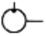
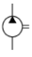
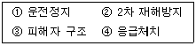

굴삭기운전기능사 (2006-10-01 기출문제)
1. 유압계가 부착된 건설기계에서 유압계 지침이 정상으로 압력상승이 되지 않았다. 그 원인으로 틀린 것은?
- 오일 파이프 파손
- 오일펌프 고장
- 유압계의 고장
- 연료 파이프 파손
(정답률: 64%)

2. 기관의 피스톤 벽이 마멸 되었을 때 발생되는 현상은?
- 압축압력의 저하
- 폭발압력의 증가
- 기관회전수 증가
- 열효율의 높아짐
(정답률: 84%)
3. 가압식 라디에이터의 장점으로 틀린 것은?
- 방열기를 작게 할 수 있다.
- 냉각수의 비등점을 높일 수 있다.
- 냉각수의 순환속도가 빠르다.
- 냉각장치의 효율을 높일 수 있다.
(정답률: 36%)
4. 건설기계장비로 현장에서 작업시 온도계기는 정상인데 엔진부조가 발생하기 시작했다. 다음 중 점검사항으로 가장 적합한 것은?
- 연료계통을 점검한다.
- 충전계통을 점검한다.
- 윤활계통을 점검한다.
- 냉각계통을 점검한다.
(정답률: 58%)
5. 기관 과열원인과 가장 거리가 먼 것은?
- 팬벨트가 헐거울 때
- 물 펌프작용이 불량할 때
- 크랭크축 타이밍기어가 마모 되었을 때
- 방열기 코어가 규정이상으로 막혔을 때
(정답률: 60%)
6. 작업 후 탱크에 연료를 가득 채워주는 이유로 틀린 것은?
- 내일(다음)의 작업을 위해서
- 연료의 기포방지를 위해서
- 연료 탱크에 수분이 생기는 것을 방지하기 위해서
- 연료의 압력을 높이기 위해서
(정답률: 68%)
7. 건설기계 운전 중 엔진이 부조를 하다가 시동이 꺼졌다. 그 원인이 아닌 것은?
- 연료필터 막힘
- 연료에 물 혼입
- 분사 노즐이 막힘
- 연료장치의 오버플로호스가 파손
(정답률: 61%)
8. 유압식 밸브 리프터의 장점이 아닌 것은?
- 밸브간극 조정이 필요하지 않다.
- 밸브 개폐시기가 정확하다.
- 구조가 간단하다.
- 밸브기구의 내구성이 좋다.
(정답률: 57%)
9. 연소에 필요한 공기를 실린더로 흡입할 때, 먼지 등의 불순물을 여과하여 피스톤 등의 마모를 방지하는 역할을 하는 장치는?
- 과급기(supercharge)
- 에어클리너(aircleaner)
- 플라이휠(flywheel)
- 냉각장치(coolingsystem)
(정답률: 83%)
10. 실린더 헤드 등 면적이 넓은 부분에서 볼트를 조이는 방법으로 맞는 것은?
- 규정토크로 한번에 조인다.
- 중심에서 외측을 향하여 대각선으로 조인다.
- 외측에서 중심을 향하여 대각선으로 조인다.
- 조이기 쉬운 곳부터 조인다.
(정답률: 70%)
11. 감압장치에 대한 설명으로 옳은 것은?
- 출력을 증가시키는 장치
- 연료 손실을 감소시키는 장치
- 화염 전파속도를 빨리해주는 장치
- 시동을 도와주는 장치
(정답률: 39%)
12. 축전지의 전해액이 빨리 줄어든다. 그 원인과 가장 거리가 먼 것은?
- 축전지 케이스가 손상된 경우
- 과충전이 되는 경우
- 비중이 낮은 경우
- 전압 조정기가 불량인 경우
(정답률: 40%)
13. 교류 발전기에서 교류를 직류로 바꾸어 주는 것은?
- 계자
- 슬립링
- 브러시
- 다이오드
(정답률: 76%)
14. 축전지의 전해액을 만들 때 황산과 증류수의 혼합방법 중 틀린 것은?
- 조금씩 혼합하며 잘 저어서 냉각 시킨다.
- 증류수에 황산을 부어 혼합한다.
- 전기가 잘 통하는 금속제 용기를 사용하여 혼합한다.
- 혼합액의 온도가 20℃일 때 1.280이 되게 비중을 측정 하면서 작업을 끝낸다.
(정답률: 63%)
15. 건설계기에 전구를 교환하고자 할 때에 다음의 전구 중에서 전기저항이 가장 큰 것은?
- 24V 24W
- 24V 45W
- 12V 12W
- 12V 70W
(정답률: 36%)
16. 일반적으로 건설기계장비에 설치되는 좌우 전조등 회로의 연결 방법은?
- 병렬
- 직렬
- 직?병렬
- 단식배선
(정답률: 75%)
17. 기관을 회전시키고 있을 때 축전지의 전해액이 넘쳐흐른다. 그 원인에 해당 되는 것은?
- 전해액량이 규정보다 5mm 낮게 들어있다.
- 기관의 회전이 너무 빠르다.
- 팬벨트의 장력이 너무 팽팽하다.
- 축전지가 과충전되고 있다.
(정답률: 72%)
18. 굴삭기 등 건설기계운전 작업장에서 이동 및 선회시 안전을 위해서 행하는 적절한 조치로 맞는 것은?
- 경적을 울려서 작업장 주변 사람에게 알린다.
- 버켓을 내려서 점검하고 작업한다.
- 급방향 전환을 위하여 위험 시간을 최대한 줄인다.
- 굴착작업으로 안전을 확보한다.
(정답률: 69%)
19. 타이어 트레드패턴과 관련 없는 것은?
- 제동력
- 구동력 및 견인력
- 편평율
- 타이어의 배수효과
(정답률: 59%)
20. 정기적으로 교환해야할 소모부품과 가장거리가 먼 것은?
- 버켓투스
- 작동유 필터
- 습식흡입스트레이너
- 연료필터
(정답률: 48%)
21. 기계식 변속기가 설치된 건설기계에서 클러치판의 비틀림 코일스프링의 역할은?
- 클러치판이 더욱 세게 부착되도록 한다.
- 클러치 작동시 충격을 흡수한다.
- 클러치의 회전력을 증가시킨다.
- 클러치판과 압력판의 마멸을 방지한다.
(정답률: 62%)
22. 지게차 작업 시 지켜야 할 안전수칙으로 틀린 것은?
- 후진시는 반드시 뒤를 살필 것
- 전후진 변속시는 장비가 정지된 상태에서 행할 것
- 주정차시는 반드시 주차브레이크를 고정 시킬걸 것
- 이동시는 포크를 반드시 지상에서 높이 들고 이동할 것
(정답률: 82%)
23. 지게차의 작업 방법을 설명한 것으로 맞는 것은?
- 화물을 싣고 평지에서 주행 할 때에는 브레이크를 급격히 밟아도 된다.
- 비탈길을 오르내릴 때에는 마스트를 전면으로 기울인 상태에서 전진 운행한다.
- 유체식 클러치는 전진 주행 중 브레이크를 밟지 않고 후진시켜도 된다.
- 짐을 싣고 비탈길을 내려올 때에는 후진하여 천천히 내려온다.
(정답률: 81%)
24. 무한궤도형 불도저의 장점(휠형과 비교)설명으로 틀린 것은?
- 이동성이 우수하다.
- 견인력이 우수하다.
- 습지 통과가 용이하다.
- 물이 있어도 작업을 할 수 있다.
(정답률: 66%)
25. 굴삭기의 프론트아이들러와 스프로켓이 일치되게 하기 위해서는 브라켓 옆에 무엇으로 조정하는가?
- 시어핀
- 쐐기
- 편심볼트
- 심(shim)
(정답률: 46%)
26. 로더를 운전 하려고 시동을 할 때 조치사항으로 잘못된 것은?
- 연료 및 각종 오일을 점검한다.
- 붐과 버켓 레버를 중립에 둔다.
- 변속기 레버를 중립에 둔다.
- 유압계의 압력을 정상으로 조정한다.
(정답률: 50%)
27. 1종 대형면허소지자가 조종할 수 없는 건설기계는?
- 지게차
- 콘크리트펌프
- 아스팔트살포기
- 노상안정기
(정답률: 59%)
28. 신개발 시험?연구목적 운행을 제외한 건설기계의 임시 운행기간은 몇 일 이내인가?
- 5일
- 10일
- 15일
- 20일
(정답률: 43%)
29. 좌회전을 하기 위하여 교차로에 진입되어 있을 때 황색등화로 바뀌면 어떻게 하여야 하는가?
- 정지하여 정지선으로 후진한다.
- 그 자리에 정지한다.
- 신속히 좌회전하여 교차로 밖으로 진행한다.
- 좌회전을 중단하고 되돌아와야 한다.
(정답률: 76%)
30. 철길건널목통과 방법으로 틀린 것은?
- 경보기가 울리고 있는 동안에는 통과 하여서는 아니 된다.
- 건널목에서 앞차가 서행하면서 통과 할 때에는 그 차를 따라 서행한다.
- 차단기가 내려지려고 할 때에는 통과 하여서는 아니 된다.
- 건널목직전에서 일시정지 하였다가 안전함을 확인한 후 통과한다.
(정답률: 81%)
31. 도로교통법상 운전자의 준수사항이 아닌 것은?
- 출석 지시서를 받은 때 운전하지 않을 의무
- 화물의 적재를 확실히 하여 떨어지는 것을 방지할 의무
- 운행시 고인 물을 튀게하여 다른 사람에게 피해를 주지 않을 의무
- 안전띠를 착용할 의무
(정답률: 76%)
32. 도로교통법규상 주차금지 장소를 나타낸 것으로 틀린 것은?
- 소방용 방화물통으로부터 5m 이내의 지점
- 화재경보기로부터 3m이내의 지점
- 전신주로부터 12m이내의 지점
- 주차금지 표지가 설치된 곳
(정답률: 75%)
33. 건설기계의 구조변경 검사는 누구에게 신청하여야 하는가?
- 건설기계정비업소
- 자동차검사소
- 검사대행자(건설기계 검사소)
- 건설기계 폐기업소
(정답률: 76%)
34. 정지선이나 횡단보도 및 교차로 직전에서 정지 하여야 할 신호로 맞는 것은?
- 녹색 및 황색등화
- 황색등화의 점멸
- 황색 및 적색등화
- 녹색 및 적색등화
(정답률: 80%)
35. 유압 압력계의 기호는?

(정답률: 50%)
36. 유압펌프의 기능을 설명한 것으로 맞는 것은?
- 유압회로내의 압력을 측정하는 기구이다.
- 어큐뮬레이터와 동일한 기능을 한다.
- 유압에너지를 동력으로 변환한다.
- 원동기의 기계적 에너지를 유압에너지로 변환한다.
(정답률: 50%)
37. 유압회로의 최고압력을 제한하고 회로내의 과부하를 방지하는 밸브는?
- 안전밸브(릴리프밸브)
- 감압밸브(리듀싱밸브)
- 순차밸브(시퀸스밸브)
- 무부하밸브(언로딩밸브)
(정답률: 43%)
38. 유압펌프에서 사용되는 GPM의 의미는?
- 분당 토출하는 작동유의 양
- 복동 실린더의 치수
- 계통 내에서 형성되는 압력의 크기
- 흐름에 대한 저항.
(정답률: 68%)
39. 그림의 유압기호는 무엇을 표시 하는가?

- 오일쿨러
- 유압탱크
- 유압펌프
- 유압모터
(정답률: 56%)
40. 유압회로 내에 잔압을 설정해두는 이유로 가장 적절한 것은?
- 제동 해제방지
- 유로 파손방지
- 오일 산화방지
- 작동 지연방지
(정답률: 58%)
41. 펌프가 오일을 토출 하지 않을 때의 원인으로 틀린 것은?
- 오일탱크의 유면이 낮다.
- 흡입관으로 공기가 유입된다.
- 토출측 배관체결볼트가 이완되었다.
- 오일이 부족하다.
(정답률: 53%)
42. 유압회로에서 역류를 방지하고 회로내의 잔류압력을 유지하는 밸브는?
- 체크밸브
- 셔틀밸브
- 매뉴얼밸브
- 스로틀밸브
(정답률: 70%)
43. 유압기기의 작동속도를 높이기 위하여 무엇을 변화시켜야 하는가?
- 유압펌프의 토출유량을 증가시킨다.
- 유압모터의 압력을 높인다.
- 유압펌프의 토출압력을 높인다.
- 유압모터의 크기를 작게 한다.
(정답률: 49%)
44. 유압실린더의 작동속도가 정상보다 느릴 경우 예상되는 원인으로 가장 적절한 것은?
- 계통내의 흐름용량이 부족하다.
- 작동유의 점도가 약간 낮아짐을 알 수 있다.
- 작동유의 점도지수가 높다.
- 릴리프밸브의 조정압력이 너무 높다.
(정답률: 48%)
45. 작동유 온도상승시 유압계통에 미치는 영향으로 틀린 것은?
- 열화를 촉진한다.
- 점도저하에 의해 누유 되기 쉽다.
- 유압펌프의 효율은 좋아진다.
- 온도변화에 의해 유압기기가 열 변형되기 쉽다.
(정답률: 65%)
46. 유압장치의 금속가루 또는 불순물을 제거하기 위한 것으로 맞게 짝지어진 것은?
- 여과기와 어큐뮬레이터
- 스크레이퍼와 필터
- 필터와 스트레이너
- 어큐뮬레이터와 스트레이너
(정답률: 57%)
47. 감전되거나 전기화상을 입을 위험이 있는 작업 시 작업자가 착용해야 할 것은?
- 구명구
- 보호구
- 구명조끼
- 비상벨
(정답률: 86%)
48. 다음은 재해가 발생하였을 때 조치요령이다. 조치순서로 맞는 것은?

- ①→③→②→④
- ①→③→④→②
- ③→④→①→②
- ③→④→②→①
(정답률: 78%)
49. 드릴(drill)기기를 사용하여 작업할 때 착용을 금지하는 것은?
- 안전화
- 장갑
- 모자
- 작업복
(정답률: 79%)
50. 안전보호구 선택 시 유의사항으로 틀린 것은?
- 보호구 검정에 합격하고 보호성능이 보장될 것
- 반드시 강철로 제작되어 안전보장형일 것
- 작업행동에 방해되지 않을 것
- 착용이 용이하고 크기 등 사용자에게 편리할 것
(정답률: 86%)
51. 토크렌치의 가장 올바른 사용법은?
- 렌치 끝을 한손으로 잡고 돌리면서 눈은 게이지 눈금을 확인한다.
- 렌치 끝을 양손으로 잡고 돌리면서 눈은 게이지 눈금을 확인한다.
- 왼손은 렌치 끝을 잡고 돌리고 오른손은 지지점을 누르고 게이지 눈금을 확인한다.
- 오른손은 렌치 끝을 잡고 돌리고 왼손은 지지점을 누르고 게이지 눈금을 확인한다.
(정답률: 52%)
52. 유류화재시 소화를 위한 방법으로 가장 거리가 먼 것은?
- 방화 커튼을 이용하여 화재진압
- 모래를 사용하여 화재진압
- 소화기를 이용하여 화재진압
- 물을 이용하여 화재진압
(정답률: 81%)
53. 가스 접합용접장치의 용기 색깔 중 산소용기는?
- 청색
- 황색
- 적색
- 녹색
(정답률: 72%)
54. 작업 중 기계장치에서 이상한 소리가날 경우 작업자가 해야 할 조치로 가장 적합한 것은?(오류 신고가 접수된 문제입니다. 반드시 정답과 해설을 확인하시기 바랍니다.)
- 계속 작업하고 작업 종료 후에 조치한다.
- 장비를 멈추고 열을 식힌 후 계속 작업한다.
- 속도가 너무 빠르게 작업한다.
- 즉시, 작동을 멈추고 작업한다.
(정답률: 66%)
55. 장비점검 및 정비작업에 대한 안전수칙과 가장 거리가 먼 것은?
- 알맞은 공구는 사용해야 한다.
- 기관을 시동할 때 소화기를 비치하여야 한다.
- 차체 용접시 배터리가 접지된 상태에서 한다.
- 평탄한 위치에서 한다.
(정답률: 74%)
56. 체인블록을 사용할 때 가장 옳다고 생각되는 것은?
- 체인이 느슨한 상태에서 급격히 잡아당기면 재해가 발생할 수 있다.
- 밧줄은 무조건 굵은 것을 사용하여야 한다.
- 기관을 들어 올릴 때에는 반드시 체인으로 묶어야 한다.
- 이동시는 무조건 최단거리 코스로 빠른 시간 내에 이동시켜야 한다.
(정답률: 48%)
57. 가스배관과 수평거리 몇cm 이내에서는 파일박기를 할 수 없도록 도시가스 사업법에 규정되어 있는가?
- 30
- 60
- 90
- 120
(정답률: 56%)
58. 22.9[kV]배전 선로에 근접하여 굴삭기 등 건설기계로 작업시 안전관리상 맞는 것은?
- 안전관리자의 지시 없이 운전자가 알아서 작업한다.
- 전력선에 접촉되더라도 끊어지지 않으면 사고는 발생하지 않는다.
- 전력선이 활선인지 확인 후 안전 조치된 상태에서 작업한다.
- 해당시설 관리자는 입회하지 않아도 무방하다.
(정답률: 84%)
59. 건설기계에 의한 고압선 주변작업에 대한 설명으로 맞는 것은?
- 작업장비의 최대로 펼쳐진 끝으로부터 전선에 접촉되지 않도록 이격하여 작업한다.
- 작업장비의 최대로 펼쳐진 끝으로부터 전주에 접촉되지 않도록 이격하여 작업한다.
- 전압의 종류를 확인한 후 안전 이격거리를 확보하여 그 이내로 접근되지 않도록 작업한다.
- 전압의 종류를 확인한 후 전선과 전주에 접촉되지 않도록 작업한다.
(정답률: 66%)
60. 도시가스 배관을 지하에 매설할 때 중압인 경우 배관의 표면 색상은?
- 적색
- 청색
- 황색
- 검정색
(정답률: 49%)